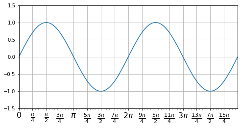
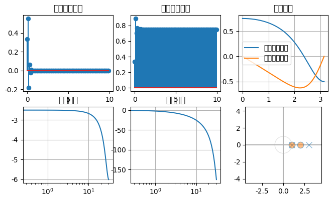

Python是目前比较流行的一种编程语言，在处理数据、分析数据以及数据可视化方面拥有很多功能强大的工具，这也是 Python 在科学领域中能够迅速发展的一个主要原因。
我们知道Matlab是数字信号处理领域的必备工具之一，与此相似的软件还有INRIA出品的一款SciLab。那么，我们来看看利用Python怎么取代Matlab来解决数字信号处理中的基本问题。
工具箱请参考网页，https://docs.scipy.org/doc/scipy/reference/signal.html
加载信号处理模块¶
[1]:
# 加载模块
%matplotlib inline
import matplotlib.pyplot as plt
import scipy.signal as sp
import numpy as np
from ipywidgets import interact, interactive, fixed, interact_manual, FloatSlider
import ipywidgets as widgets
from IPython.display import display
[1]:
from mayavi import mlab
mlab.init_notebook()
s = mlab.test_plot3d()
s
---------------------------------------------------------------------------
ModuleNotFoundError Traceback (most recent call last)
<ipython-input-1-64484b9af481> in <module>
----> 1 from mayavi import mlab
2 mlab.init_notebook()
3 s = mlab.test_plot3d()
4 s
ModuleNotFoundError: No module named 'mayavi'
[3]:
from sympy import *
x = Symbol('x')
integrate(x*sin(x), (x, 0, 2*pi))
[3]:
$\displaystyle - 2 \pi$
[4]:
import matplotlib.pyplot as pl
from matplotlib.ticker import MultipleLocator, FuncFormatter
import numpy as np
x = np.arange(0, 4*np.pi, 0.01)
y = np.sin(x)
pl.figure(figsize=(8,4))
pl.plot(x, y)
ax = pl.gca()
def pi_formatter(x, pos):
"""
比较罗嗦地将数值转换为以pi/4为单位的刻度文本
"""
m = np.round(x / (np.pi/4))
n = 4
if m%2==0: m, n = m/2, n/2
if m%2==0: m, n = m/2, n/2
if m == 0:
return "0"
if m == 1 and n == 1:
return "$\pi$"
if n == 1:
return r"$%d \pi$" % m
if m == 1:
return r"$\frac{\pi}{%d}$" % n
return r"$\frac{%d \pi}{%d}$" % (m,n)
# 设置两个坐标轴的范围
pl.ylim(-1.5,1.5)
pl.xlim(0, np.max(x))
# 设置图的底边距
pl.subplots_adjust(bottom = 0.15)
pl.grid() #开启网格
# 主刻度为pi/4
ax.xaxis.set_major_locator( MultipleLocator(np.pi/4) )
# 主刻度文本用pi_formatter函数计算
ax.xaxis.set_major_formatter( FuncFormatter( pi_formatter ) )
# 副刻度为pi/20
ax.xaxis.set_minor_locator( MultipleLocator(np.pi/20) )
# 设置刻度文本的大小
for tick in ax.xaxis.get_major_ticks():
tick.label1.set_fontsize(16)
pl.show()

序列的基本运算方法¶
[7]:
x_widget = FloatSlider(min=0.0,max=1.0,step=0.05)
y_widget = FloatSlider(min=0.0,max=1.0,step=0.05,value=.5)
def update_x_range(*args):
x_widget.value = 2.0*y_widget.value
y_widget.observe(update_x_range,'value')
def printer(x,y):
print (x,y)
interact(printer,x=x_widget,y=y_widget)
@interact(x=True,y=1.0)
def g(x,y):
return (x,y)
[8]:
w=widgets.IntSlider()
t = widgets.Text(value='Hello World!', disabled=False)
display(w,t)
mylink = widgets.jslink((w,'value'),(t,'value'))
widgets.ToggleButton(
value=False,
description='Click me',
disabled=False,
button_style='', # 'success', 'info', 'warning', 'danger' or ''
tooltip='Description',
icon='check'
)
[19]:
%matplotlib inline
from ipywidgets import interactive
import matplotlib.pyplot as plt
import numpy as np
def f(m,b):
plt.figure(2)
x = np.linspace(-10,10,num=1000)
plt.plot(x,np.sin(m*x+b))
plt.ylim(-5,5)
plt.show()
interactive_plot = interact(f,m=(-2,2,0.1),b=(-3,3,0.5),continuous_update=False)
[10]:
a = widgets.IntSlider(description='a')
b = widgets.IntSlider(description='b')
c = widgets.IntSlider(description='c')
def f(a, b, c):
print('{}*{}*{}={}'.format(a, b, c, a*b*c))
out = widgets.interactive_output(f, {'a': a, 'b': b, 'c': c})
widgets.HBox([widgets.VBox([a, b, c]), out])
[11]:
out = widgets.Output(layout={'border': '1px solid black'})
from IPython.display import YouTubeVideo
with out:
display(YouTubeVideo('eWzY2nGfkXk'))
out
[12]:
from IPython.display import display
button = widgets.Button(description="Click Me!")
display(button)
def on_button_clicked(b):
print("Button clicked.")
button.on_click(on_button_clicked)
caption = widgets.Label(value='Changes in source values are reflected in target1')
source, target1 = widgets.IntSlider(description='Source'),\
widgets.IntSlider(description='Target 1')
dl = widgets.dlink((source, 'value'), (target1, 'value'))
display(caption, source, target1)
caption = widgets.Label(value='The values of range1 and range2 are synchronized')
slider = widgets.IntSlider(min=-5, max=5, value=1, description='Slider')
def handle_slider_change(change):
caption.value = 'The slider value is ' + (
'negative' if change.new < 0 else 'nonnegative'
)
slider.observe(handle_slider_change, names='value')
display(caption, slider)
a = widgets.IntSlider(description="Delayed", continuous_update=False)
b = widgets.IntText(description="Delayed", continuous_update=False)
c = widgets.IntSlider(description="Continuous", continuous_update=True)
d = widgets.IntText(description="Continuous", continuous_update=True)
widgets.link((a, 'value'), (b, 'value'))
widgets.link((a, 'value'), (c, 'value'))
widgets.link((a, 'value'), (d, 'value'))
widgets.VBox([a,b,c,d])
from ipywidgets import Button, Layout
b = Button(description='(50% width, 80px height) button',
layout=Layout(width='50%', height='80px'))
d = Button(description='Another button with the same layout', layout=b.layout)
display(b,d)
from ipywidgets import IntSlider, Label
IntSlider(description=r'\(\int_0^tf\)')
[ ]:
x = np.array([1,2,3,4,5,6,9])
y = np.linspace(0,2*np.pi,100)
plt.subplot(2,1,1)
plt.plot(x)
plt.title('Sequence')
plt.subplot(2,1,2)
plt.plot(y,np.sin(y))
plt.title('Sin Wave')
plt.tight_layout()
序列的加法、乘法（点乘）¶
[ ]:
x = np.array([1,2,3,4,5,6,9])
y = np.array([2,3,4,5,6,7,8])
z = x*y
plt.stem(z)
plt.axis('tight')
plt.show()
[ ]:
z = x+y
plt.stem(z)
plt.axis('tight')
plt.show()
序列的翻转、平移¶
有两种方法， 1. 通过下标范围获取新数组，例如a[2:4]，这样得到的新数组与原数组共享数据空间 2. 通过整数序列获取新数组，例如a[inx]，这样得到的新数组与原始数据不共享空间
[ ]:
# 第一种序列的翻转
z = x[-1::-1] # 起始元素:终止元素:步长
print( x)
z[2] = 100 # 由于共享空间，此操作会引起序列x的变化
print( x)
print (z)
# 第二种序列的翻转
idx = np.arange(len(x),0,-1)
卷积¶
[ ]:
x = np.array([1,2,3,4,5,6,9])
y = np.array([2,3,4,5,6,7,8])
z = sp.convolve(x,y,mode='full')
print( z)
相关¶
卷积和相关满足下面的关系
\[x[-n]\circledast y[n] = r_{xy}\]
[ ]:
x = np.array([1,2,3,4,5,6,9])
y = np.array([2,3,4,5,6,7,8])
z = sp.correlate(x,y[-1::-1],mode='full')
print( z)
LTI系统的性质¶
[20]:
#coding:utf-8
plt.rcParams['font.sans-serif']=['DejaVu'] #用来正常显示中文标签
plt.rcParams['axes.unicode_minus']=False #用来正常显示负号
zeros = np.array([1,2])
poles = np.array([3,1])
sys_x = sp.dlti(zeros,poles,dt=0.1)
print( 'System Poles:', sys_x.poles, '\nSystem Zeros:', sys_x.zeros)
plt.figure(figsize=(8,7),dpi=98)
# p1 = plt.subplot(331)
# p2 = plt.subplot(332)
# p3 = plt.subplot(333)
# p4 = plt.subplot(334)
# p5 = plt.subplot(335)
# p6 = plt.subplot(336)
# 系统的单位冲激响应
plt.subplot(3,3,1)
t,h = sys_x.impulse() # 单位冲激响应
plt.stem(t,h[0])
plt.title(u'单位冲激响应')
# plt.show()
# 系统的阶跃响应
plt.subplot(3,3,2)
t,h = sys_x.step()
plt.stem(t,h[0])
plt.title(u'单位阶跃响应')
# 系统的幅度响应
plt.subplot(3,3,3)
freq, res = sys_x.freqresp() # 频率响应
plt.plot(freq,np.real(res),label=u'频率响应实部')
plt.plot(freq,np.imag(res),label=u'频率响应虚部')
plt.legend()
plt.title(u'频率响应')
plt.grid()
# 系统的幅度和相位响应
plt.subplot(3,3,4)
w,mag,phase = sys_x.bode()
plt.semilogx(w,mag)
plt.title(u'幅度响应')
plt.grid()
plt.subplot(3,3,5)
plt.semilogx(w,phase)
plt.title(u'相位响应')
plt.grid()
ax = plt.subplot(3,3,6)
from zplane import zplane
zplane(zeros,poles,ax=ax)
# ax.title(u'零极点图')
# plt.grid()
# plt.tight_layout()
plt.show()
System Poles: [-0.33333333]
System Zeros: [-2.]
/Users/mac/anaconda3/envs/Sphinx/lib/python3.6/site-packages/ipykernel_launcher.py:21: UserWarning: In Matplotlib 3.3 individual lines on a stem plot will be added as a LineCollection instead of individual lines. This significantly improves the performance of a stem plot. To remove this warning and switch to the new behaviour, set the "use_line_collection" keyword argument to True.
/Users/mac/anaconda3/envs/Sphinx/lib/python3.6/site-packages/ipykernel_launcher.py:28: UserWarning: In Matplotlib 3.3 individual lines on a stem plot will be added as a LineCollection instead of individual lines. This significantly improves the performance of a stem plot. To remove this warning and switch to the new behaviour, set the "use_line_collection" keyword argument to True.
---------------------------------------------------------------------------
AttributeError Traceback (most recent call last)
<ipython-input-20-b14280af2dfb> in <module>
54 ax = plt.subplot(3,3,6)
55 from zplane import zplane
---> 56 zplane(zeros,poles,ax=ax)
57 # ax.title(u'零极点图')
58 # plt.grid()
~/Nutstore Files/Documents/Mirror/OnGoing/Python/Signal Processing/zplane.py in zplane(z, p, ax, filename)
39 d[key]+=1
40 coords[key]=xy
---> 41 for key,value in d.iteritems():
42 if value > 1:
43 x , y =ax.transData.inverted().transform(coords[key])
AttributeError: 'collections.defaultdict' object has no attribute 'iteritems'

[ ]:
sp
[ ]:
[ ]: